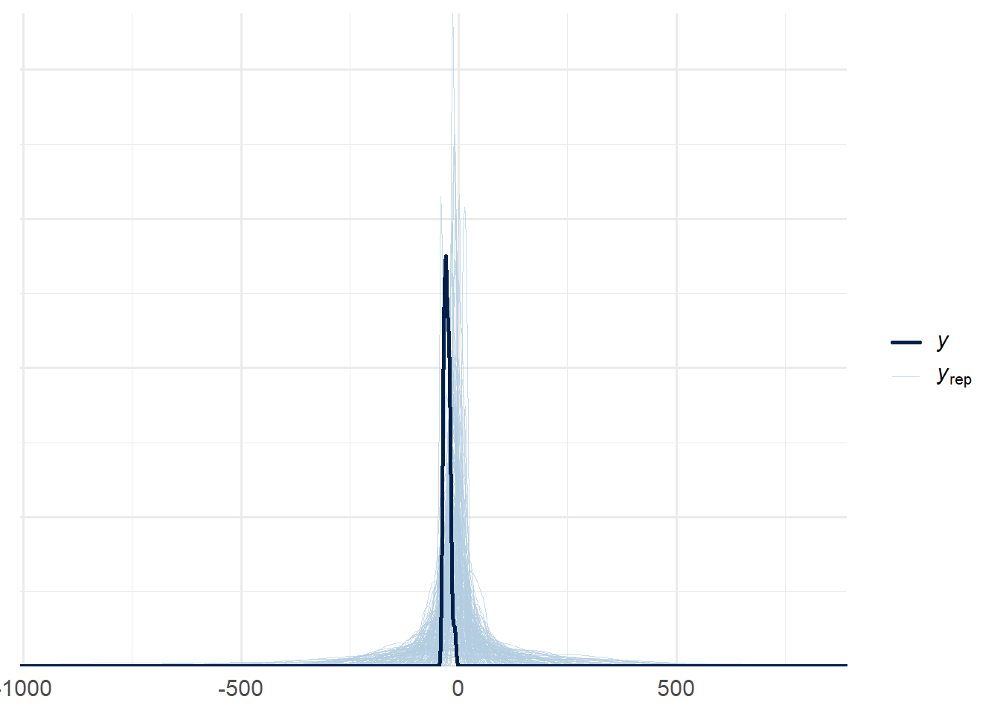
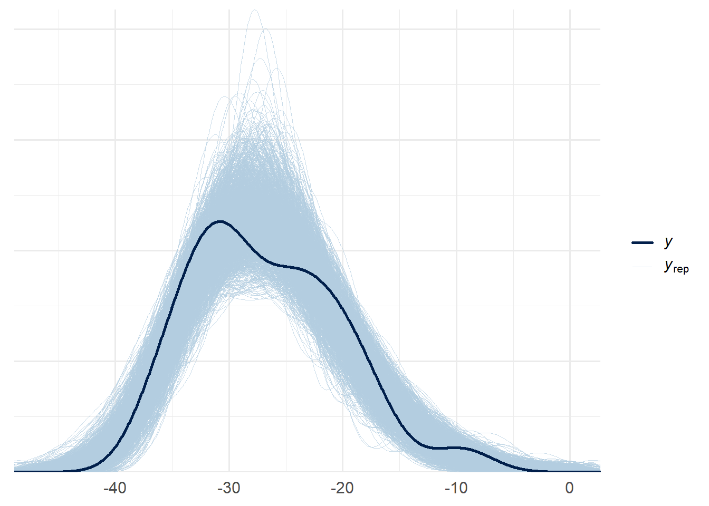
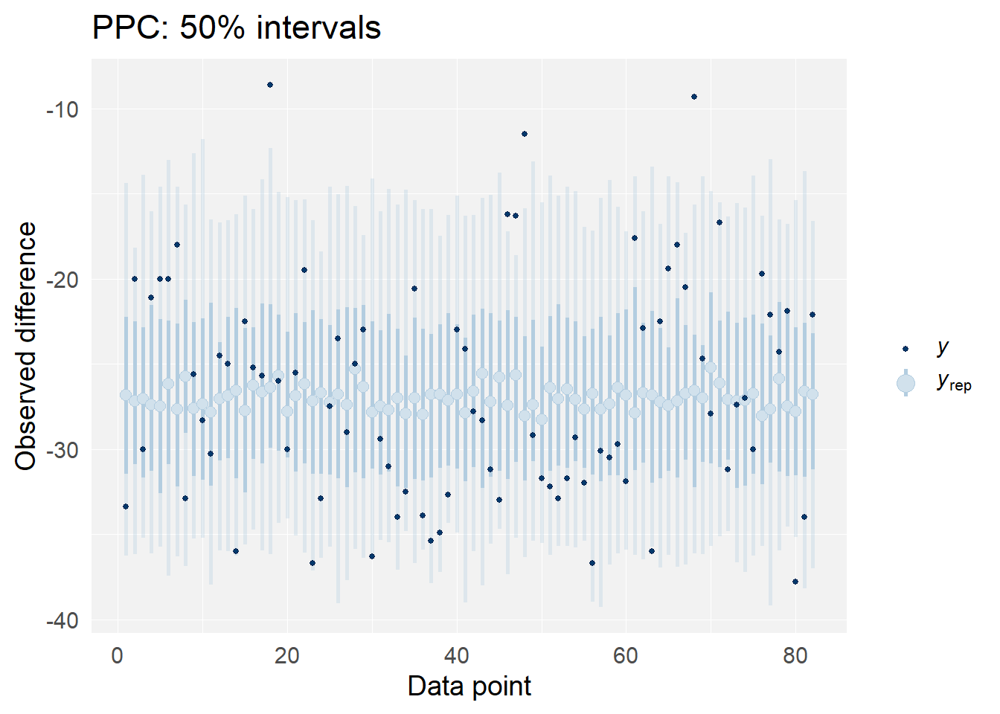
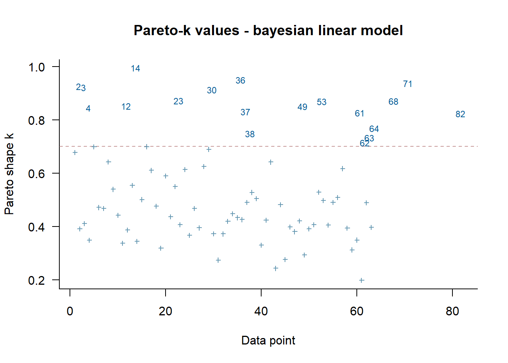

library(bayesplot)
library(cmdstanr)
library(dplyr)
library(ggplot2)
library(ggdist) # for stat_dotsinterval
library(posterior)
library(brms)
library(rstan)
library(plotly)
library(patchwork)
library(knitr)
library(kableExtra)
library(metadat)
library(metafor)
library(priorsense)
library(testthat)
# Globally specfiy cmdstan backend for brms
options(brms.backend="cmdstanr")
# Tell brms to cache results if possible
options(brms.file_refit="on_change")
# Set more readable themes with bigger font for plotting packages
ggplot2::theme_set(theme_minimal(base_size = 14))
bayesplot::bayesplot_theme_set(theme_minimal(base_size = 14))Bayesian Workflow Diary
1 Bayesian Workflow
1.1 Set up
AI tools are used to give hints on plots and codes.
1.2 Loading Data and Preprocessing
Use this section of the diary for loading your dataset of choice and performing any necessary preprocessing. This could include cleaning the data, transforming variables, or creating new variables. Remember that you should be able to re-run or modify this code if needed during the interactive presentations.
study y1i v1i y2i v2i y3i v3i y4i v4i
1 Alegret (2001) -33.4 14.3 NA NA NA NA NA NA
2 Barichella (2003) -20.0 7.3 NA NA -30.0 5.7 NA NA
3 Berney (2002) -21.1 7.3 NA NA NA NA NA NA
4 Burchiel (1999) -20.0 8.0 -20.0 8.0 -18.0 5.0 NA NA
5 Chen (2003) NA NA -32.9 125.0 NA NA NA NA
6 DBS for PD Study Grp. (2001) -25.6 4.2 -28.3 4.6 NA NA NA NA
7 Dujardin (2001) -30.3 88.2 NA NA -24.5 170.7 NA NA
8 Esselink (2004) NA NA -25.0 17.0 NA NA NA NA
9 Funkiewiez (2003) NA NA NA NA -36.0 5.0 NA NA
10 Herzog (2003) NA NA -22.5 6.8 -25.2 11.0 -25.7 15.4
mdur mbase
1 16.1 53.6
2 13.5 45.3
3 13.6 45.6
4 13.6 48.0
5 12.1 65.7
6 14.4 54.0
7 13.1 65.0
8 12.0 51.5
9 14.0 56.0
10 15.0 44.9 ### load metafor package
### create long format dataset
dat <- reshape(dat, direction="long", idvar="study", v.names=c("yi","vi"),
varying=list(c(2,4,6,8), c(3,5,7,9)))
dat <- dat[order(study, time),]
### remove missing measurement occasions from dat.long
dat <- dat[!is.na(yi),]
rownames(dat) <- NULL
head(dat, 10)
study mdur mbase time yi vi
1 Alegret (2001) 16.1 53.6 1 -33.4 14.3
2 Barichella (2003) 13.5 45.3 1 -20.0 7.3
3 Barichella (2003) 13.5 45.3 3 -30.0 5.7
4 Berney (2002) 13.6 45.6 1 -21.1 7.3
5 Burchiel (1999) 13.6 48.0 1 -20.0 8.0
6 Burchiel (1999) 13.6 48.0 2 -20.0 8.0
7 Burchiel (1999) 13.6 48.0 3 -18.0 5.0
8 Chen (2003) 12.1 65.7 2 -32.9 125.0
9 DBS for PD Study Grp. (2001) 14.4 54.0 1 -25.6 4.2
10 DBS for PD Study Grp. (2001) 14.4 54.0 2 -28.3 4.6 1.3 Week 1: Exploratory Data Analysis and Choosing a Research Question
1.3.1 Goal
After this week, you should have:
- Setting up your project, for example, using the provided templates
- Formulating a research question & finding a dataset
- Visualising and getting familiar with characteristics of your data (e.g., range, data types)
- Adding your first notes and visualisations to the workflow diary
- Picking an initial model & documenting your reasoning and the strategies you used to choose it
- Obtaining posterior samples using your initial model with default priors
- Documenting what you observe and any issues you encounter in the workflow diary
1.3.2 Research Question
- Does the deep-brain stimulation has significant positive effects on patients with Parkinson’s disease?
- If so, what is the trend of their UPDRS score over the time?
- Do mean disease duration and mean baseline UPDRS scores have effects on this trend? What effects?
1.3.3 Data Visualization
### plot data
library(ggplot2)
ggplot(dat, aes(x = time, y = yi, color = factor(study), group = study)) +
geom_line() +
geom_point() +
labs(x = "Time Point", y = "Mean Difference") +
theme_minimal() +
theme(axis.text.x = element_text(angle = 45, hjust = 1)) +
guides(color = FALSE)Intuitively, this treatment roughly has a positive effect over the time, but not too obvious from the visualization.
1.3.4 Initial model
To be simple at the start, I picked the Bayesian linear regression model at the first attempt, because it’s concise enough and considers all of the factors from the dataset. I can adjust my model based on the performance of this linear model.
Model: \[\Delta y_{it}=\beta_0 + \beta_1*time + \beta_2*mdur_i+ \beta_3*mbase_i + b_i + \epsilon_{it}\] \[b_i\sim\mathbf{N}(0,\sigma_b^2),\quad\epsilon\sim\mathbf{N}(0,\sigma^2)\]
Prior: \[\beta_\_\sim\mathbf{N}(0,5),\quad\sigma_\_\sim\mathbf{C}(0,2)\]
1.3.5 Model Definition and Fitting
1.3.6 Observations and Problems
Rhat of all the parameters is 1.00, and it seems that the Markov chains converged well enough.
From the point estimate of time coefficient, it seems that this stimulation even has a slightly positive impact on patients’ performance. Is it reliable? The CI of the time coefficient is [-1.18,0.20], so it’s hard to say and we need more evaluation methods to check the performance of this model but I’ll pause here because it’s just an attempt.
mdur and mbase both have positive impacts on patients’ performance improvement from this model’s result.
The linear Bayesian model and prior choices seem too casual, and I plan to discover some models which are more compatible with this problem.
1.4 Week 2: Prior Choice
1.4.1 Goal
After this week, you should have:
- Proposed priors for each parameter in your model, with justification
- Performed a prior predictive check to ensure that your priors are reasonable
1.4.2 Proposed priors
A correct prior choice should not be influenced by our dataset, so I will choose the priors based on common senses and some materials online.
It’s shown from the Internet that Deep-brain stimulation is a widely used treatment on Parkinson patients. Thus, we tend to believe that it has a positive effect on patients over the time and we prefer the mean of prior distribution of \(\beta_1\) to be negative (when \(\Delta y\) decreases, the performance is better than the baseline). I chose \(\mathbf{N}(-1.0, 0.5^2)\) as the prior, distributing some possibilities that it doesn’t have significant effect or even negative effects.
Higher disease duration and higher baseline UPDRS scores imply that the diseases are more severe, and it tend to be easier to get a higher improvement from the baseline. However, there are also some cases that the diseases are too severe to achieve an improvement, so for \(\beta_2\) and \(\beta_3\) I chose \(\mathbf{N}(-0.5, 0.5^2)\) as priors.
For intercept \(\beta_0\), I know usually there will be improvements. So I would choose \(\mathbf{N}(-10, 10^2)\) as the prior.
The prior of the error term : \(\quad\sigma\sim\mathbf{Exp}(0.02)\)
1.4.3 New Priors in brms and Prior Predictive Check
model_formula <- bf(yi ~ time + mdur + mbase + (1 | study))
priors <- c(
prior(normal(-1.0, 0.5), class = "b", coef = "time"),
prior(normal(-0.5, 0.5), class = "b", coef = "mdur"),
prior(normal(-0.5, 0.5), class = "b", coef = "mbase"),
prior(normal(-10, 10), class = "Intercept"),
prior(exponential(0.02), class = "sd")
)
fit <- brm(
formula = model_formula,
data = dat,
family = gaussian(),
prior = priors,
sample_prior = "only",
chains = 4,
iter = 2000,
control = list(adapt_delta = 0.95)
)Warning: Method 'posterior_samples' is deprecated. Please see ?as_draws for
recommended alternatives.par(mfrow=c(3,2))
hist(prior_samples$b_time, main = "time", xlab = "time", breaks = 30)
hist(prior_samples$b_mdur, main = "mdur", xlab = "mdur", breaks = 30)
hist(prior_samples$b_mbase, main = "mbase", xlab = "mbase", breaks = 30)
hist(prior_samples$b_Intercept, main = "b_intercept", xlab = "b_intercept", breaks = 30)
hist(prior_samples$Intercept, main = "intercept", xlab = "intercept", breaks = 30)
hist(prior_samples$sd, main = "sd", xlab = "sd", breaks = 30)

From the plots, we can see that the prior predictions tend to overestimate \(y\), and the predictions are more concentrated on smaller intervals.
1.5 Week 3: Model Fitting and Checking
1.5.1 Goal
After this week, you should have:
- Fitted your model with chosen priors to your data
- Performed diagnostic checks for quality/stability of fitting
- Performed prior sensitivity assessment
- Performed predictive performance assessment
1.5.2 Parameter Estimates and Model Fit Check
Family: gaussian
Links: mu = identity; sigma = identity
Formula: yi ~ time + mdur + mbase + (1 | study)
Data: dat (Number of observations: 82)
Draws: 4 chains, each with iter = 2000; warmup = 1000; thin = 1;
total post-warmup draws = 4000
Multilevel Hyperparameters:
~study (Number of levels: 46)
Estimate Est.Error l-95% CI u-95% CI Rhat Bulk_ESS Tail_ESS
sd(Intercept) 4.65 0.61 3.58 5.94 1.00 1111 1583
Regression Coefficients:
Estimate Est.Error l-95% CI u-95% CI Rhat Bulk_ESS Tail_ESS
Intercept 15.79 6.45 3.03 27.97 1.00 1530 2650
time -0.68 0.29 -1.24 -0.12 1.00 3981 2857
mdur -0.91 0.31 -1.51 -0.29 1.00 1417 2286
mbase -0.54 0.10 -0.74 -0.36 1.00 1273 1558
Further Distributional Parameters:
Estimate Est.Error l-95% CI u-95% CI Rhat Bulk_ESS Tail_ESS
sigma 2.60 0.31 2.09 3.31 1.00 1402 2187
Draws were sampled using sample(hmc). For each parameter, Bulk_ESS
and Tail_ESS are effective sample size measures, and Rhat is the potential
scale reduction factor on split chains (at convergence, Rhat = 1).Warning: Method 'posterior_samples' is deprecated. Please see ?as_draws for
recommended alternatives.par(mfrow=c(3,2))
hist(post_samples$b_time, main = "time", xlab = "time", breaks = 30)
hist(post_samples$b_mdur, main = "mdur", xlab = "mdur", breaks = 30)
hist(post_samples$b_mbase, main = "mbase", xlab = "mbase", breaks = 30)
hist(post_samples$b_Intercept, main = "b_intercept", xlab = "b_intercept", breaks = 30)
hist(post_samples$Intercept, main = "intercept", xlab = "intercept", breaks = 30)
hist(post_samples$sd, main = "sigma", xlab = "sigma", breaks = 30)
From the results of the model fitting, we have these conclusions:
All of the parameters are converging well in the Markov chains, because Rhat are all \(1.00\).
Time, mdur, mbase all have negative impacts on \(y\), which implies that this treatment tend to help alleviate the disease over the time, and the effects are more significant when the baseline is more severe.
These conclusions make sense to some extents, because the posterior intervals are consistent with our assumptions from the prior.
1.5.3 Posterior predictive checks

post_pred <- posterior_predict(fit, ndraws = length(dat$yi))
color_scheme_set("blue")
ppc_intervals(
y = dat$yi,
yrep = t(post_pred),
x = dat$rownames,
prob = 0.5
) +
labs(
x = "Data point",
y = "Observed difference",
title = "PPC: 50% intervals",
) +
panel_bg(fill = "gray95", color = NA) +
grid_lines(color = "white")
From the distribution of \(y_{rep}\), we can see that they are approximately close to \(y\), but it seems that there are still some convergences, indicating that our model is too simple and inaccurate.
From the \(50%\) interval plot, we can see that most of the data points are falling into the \(50%\) intervals, but there are still some outlying points, and less points are falling into the inner intervals.
1.5.4 Influence and sensitivity checks
Warning: Found 27 observations with a pareto_k > 0.7 in model 'fit'. We
recommend to set 'moment_match = TRUE' in order to perform moment matching for
problematic observations.
Computed from 4000 by 82 log-likelihood matrix.
Estimate SE
elpd_loo -221.6 6.0
p_loo 38.2 3.9
looic 443.1 12.1
------
MCSE of elpd_loo is NA.
MCSE and ESS estimates assume MCMC draws (r_eff in [0.4, 1.6]).
Pareto k diagnostic values:
Count Pct. Min. ESS
(-Inf, 0.7] (good) 55 67.1% 178
(0.7, 1] (bad) 24 29.3% <NA>
(1, Inf) (very bad) 3 3.7% <NA>
See help('pareto-k-diagnostic') for details.
The PSIS-LOO plot shows that our posterior rely on some certain data points too much, because many of them are over 0.7, indicating some overfitting issues.
Sensitivity based on cjs_dist:
# A tibble: 53 × 4
variable prior likelihood diagnosis
<chr> <dbl> <dbl> <chr>
1 b_Intercept 0.0549 0.0664 prior-data conflict
2 b_time 0.0709 0.198 prior-data conflict
3 b_mdur 0.106 0.0905 prior-data conflict
4 b_mbase 0.00578 0.0507 -
5 sd_study__Intercept 0.00879 0.225 -
6 sigma 0.00645 1.10 -
7 Intercept 0.0174 0.0834 -
8 r_study[Alegret.(2001),Intercept] 0.0233 0.191 -
9 r_study[Barichella.(2003),Intercept] 0.00361 0.130 -
10 r_study[Berney.(2002),Intercept] 0.00908 0.177 -
# ℹ 43 more rows
The power-scaling sensitivity plot shows that all of our parameters do not rely on the prior assumption too much. It means that our model is robust from this perspective.
An exception is that the posterior are very sensitive to the likelihood of \(\sigma\), which might be a issue. The pareto k value of a much lower power scaling of likelihood is quite high, and it indicates some inaccuracy with it.
1.6 Week 4: Extending Models and Model Selection
1.6.1 Goal
After this week, you should have:
- Decided on whether a model expansion or selection approach is relevant for your research question, with justification
- Proposed a second model (or an expansion to the first), building on the issues/diagnostics/concepts from previous weeks
1.6.2 Code and Results
1.7 Week 5: Interpreting and Presenting Model Results
1.7.1 Goal
After this week, you should have:
- Prepared a concise summary of your results and how they answer your research question
- Prepared a visualisation of your results that is suitable for presentation to a non-technical audience
1.7.2 Code and Results
1.8 Week 6: Final Notebook
1.8.1 Goal
After this week, you should have:
- Prepared a separate notebook summarising your analysis and results in the form of a case study
- Be sure to use the case studies provided in this course to guide you